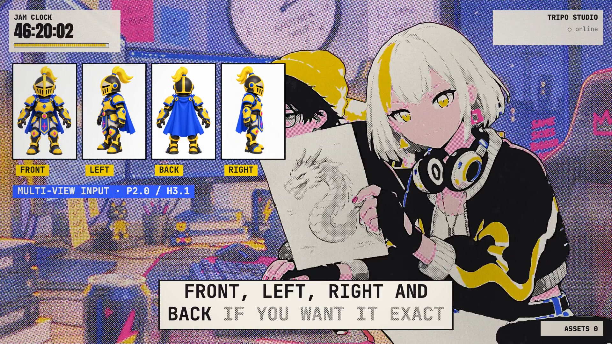
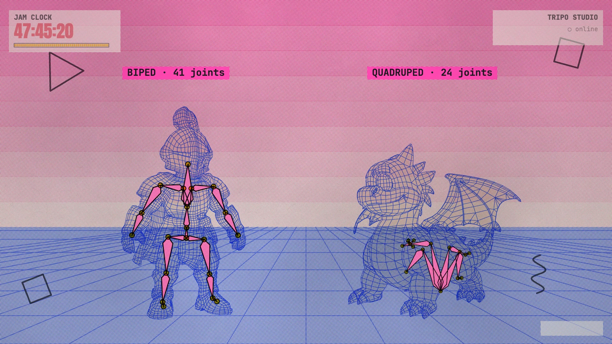

01 / MAKE

From references to 3D.
Multiview images for the knight. A sketch for the dragon. An image for the tavern. Text prompts for the props. Tripo H3.1 and P2.0 generate the meshes and materials.
From an idea
to a world.
TRI and JAM turn a blank screen into a tiny fantasy world. A pop music video told through print textures, game assets and a very long night.
Original Tripo assets from READY, plus new demonstrations for this website. Rotate a model, compare topology, play an animation or separate its parts.
Four views of one character.
One consistent 3D model.
Tripo built the 3D assets. Generated performance footage, painted environments and a custom print renderer bring them into the same world.

Multiview images for the knight. A sketch for the dragon. An image for the tavern. Text prompts for the props. Tripo H3.1 and P2.0 generate the meshes and materials.

Quad conversion, auto-rigging and animation retargeting. The knight has 41 joints; the dragon has 24. AI segmentation separates the knight into 15 parts.
Seedance performance footage, generated backgrounds and ElevenLabs music meet in a custom JavaScript / three.js pipeline: layered ink, halftones, titles and 3D sequences.
A closer look at the cast, environments, props and finished frames that make READY.